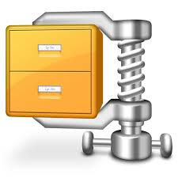

<div id="jsn-maincontent" class="span9 order1 row-fluid">
  <div id="jsn-maincontent_inner">
    <div id="jsn-centercol">
      <div id="jsn-centercol_inner">
        <div id="jsn-mainbody-content" class="jsn-hasmainbody">
          <div id="jsn-mainbody-content-inner1">
            <div id="jsn-mainbody-content-inner2">
              <div id="jsn-mainbody-content-inner3">
                <div id="jsn-mainbody-content-inner4" class="row-fluid">
                  <div id="jsn-mainbody-content-inner" class="span12 order1">
                    <div id="jsn-mainbody">
                      <div id="system-message-container"></div>

                      <div
                        class="item-page"
                        itemscope
                        itemtype="https://schema.org/Article"
                      >
                        <meta itemprop="inLanguage" content="en-GB" />

                        <div itemprop="articleBody">
                          <p></p>
                          <h1 style="text-align: center">
                            An introduction to data compression
                          </h1>
                          <p>
                            File compression means that you take a file, some
                            files or a folder and you give it to some
                            compression software that 'squashes it'. This makes
                            it much smaller than the original size. This is
                            sometimes known as zipping up a file or folder. What
                            file compression software actually does is to look
                            at each file you want to compress and see if it can
                            construct rules to reduce the size of the file.
                          </p>
                          <p>
                            For example, suppose you had a word processed
                            document with the word 'elephants' 50 times in
                            different places.
                          </p>
                          <p style="margin-left: 30px">
                            <strong
                              >You would need 50 * 9 &nbsp;= 450 bytes to store
                              all of the characters in elephant fifty
                              times.</strong
                            ><br /><strong>
                              The file compression software creates a dictionary
                              and puts elephant in it.</strong
                            ><br /><strong
                              >It also gives elephant a code, let us say E to
                              keep it simple.</strong
                            ><br /><strong
                              >Now it replaces all the instances of
                              elephant&nbsp;in your document with E.</strong
                            >
                          </p>
                          <p>
                            That's it! All you need now are 50 * 1 = 50 bytes
                            to store your document (and a little bit for the
                            dictionary). Instead of 450 bytes, you only need 50
                            bytes to store the word 'elephant'! If you did that
                            for all the words in your document, you would soon
                            have a much smaller document. You've now created a
                            zip or compressed document. If you wanted to unzip
                            it, or decompress it, you just get some compression
                            software to put the words from the dictionary back
                            into the document. This is the basic idea but there
                            is a really good description of the whole process
                            <a
                              href="http://www.howstuffworks.com/file-compression.htm"
                              target="_blank"
                              >here</a
                            >.
                          </p>
                          <ul style="list-style-type: disc">
                            <li style="list-style-type: none">
                              <ul style="list-style-type: disc">
                                <li>
                                  There are a number of reasons why you might
                                  want to compress documents.&nbsp;Compressed
                                  files and folders take less time to transmit
                                  across the Internet than the original files,
                                  because they are smaller. If you had, for
                                  example, video files or music files to send,
                                  which can be very large, this might be
                                  important.
                                </li>
                                <li>
                                  If you were the BBC and wanted to 'stream'
                                  video (where people watch the video at the
                                  same time the BBC is sending it) then you need
                                  your large files to be as small as possible or
                                  the video will slow or stop from time to time.
                                </li>
                                <li>
                                  You can store more files, programs and data on
                                  any storage device such as your pen drive if
                                  they are compressed.
                                </li>
                                <li>
                                  If you want to send ten files by email, an
                                  efficient way to send them is to first put
                                  them in a zip folder. The zip folder can be
                                  attached to an email in the same way that a
                                  file can be attached to an email. (Note,
                                  however, that you can't attach a normal folder
                                  to an email usually.)
                                </li>
                              </ul>
                            </li>
                          </ul>
                          <p>
                            There are lots of free data compression programs
                            available and some that you have to pay for. Windows
                            comes with a free utility. in the File Manager, just
                            right-click and then select 'New' folder by
                            'Compressed Folder'. 7-Zip is open source and very
                            good, as is Hamster Free Zip application. You can
                            download and try out an evaluation copy of
                            WinZip.&nbsp;
                          </p>
                          <p>
                            <strong>Q1.</strong> What is meant by a zip file?<br /><strong
                              >Q2.</strong
                            >
                            Are compressed files bigger or smaller than the
                            original contents?<br /><strong>Q3.</strong> What
                            unit is used to measure file size?<br /><strong
                              >Q4.</strong
                            >
                            Describe with an example how file compression is
                            achieved.<br /><strong>Q5.</strong> You want to save
                            lots of photos and videos on your pen drive but they
                            won't fit. What could you do about this problem?<br /><strong
                              >Q6.</strong
                            >
                            What is meant by 'video streaming'?<br /><strong
                              >Q7.</strong
                            >
                            Why are videos compressed during the streaming
                            process?<br /><strong>Q8.</strong> What is meant by
                            open source software?<br /><strong>Q9.</strong>
                            State one open source application for compressing
                            files.<br /><strong>Q10.</strong> Visit
                            <a
                              href="http://www.howstuffworks.com/file-compression.htm"
                              target="_blank"
                              >here</a
                            >&nbsp;and read how files are compressed.
                          </p>
                          <p></p>
                        </div>
                      </div>
                    </div>
                  </div>
                </div>
              </div>
            </div>
          </div>
        </div>
      </div>
    </div>
  </div>
</div>
